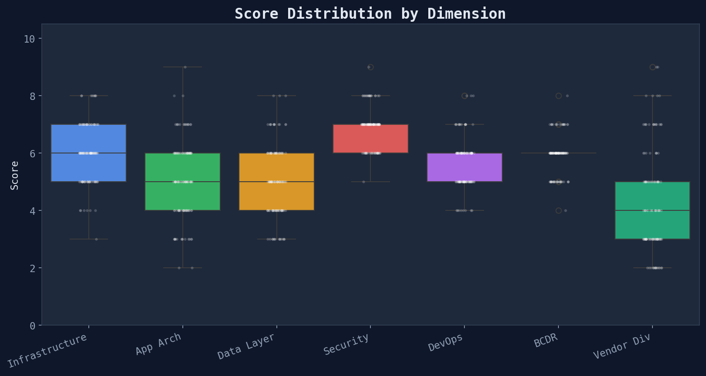

Delve Tech Due Diligence · Meta-Analysis
What drives high scores — dimension analysis of 121 scored companies
Dimension Distributions
Each company is scored across 7 dimensions on a 1-10 scale. The box plots reveal how tightly or broadly
each dimension varies across the portfolio.

Box = IQR, whiskers = 1.5×IQR, dots = individual companies
| Dimension | Mean | Median | Std Dev | Min | Max |
|---|
| Infrastructure | 6.0 | 6 | 1.0 | 3 | 8 |
| App Arch | 5.1 | 5 | 1.4 | 2 | 9 |
| Data Layer | 5.0 | 5 | 1.3 | 3 | 8 |
| Security | 6.9 | 7 | 0.7 | 5 | 9 |
| DevOps | 5.6 | 6 | 0.9 | 4 | 8 |
| BCDR | 5.9 | 6 | 0.7 | 4 | 8 |
| Vendor Div | 4.3 | 4 | 1.8 | 2 | 9 |
Security (6.9/10) is the highest and tightest — most companies achieve a similar level via template SOC 2 controls. Vendor Diversity (4.3/10) is the lowest and widest — it's the dimension that most differentiates companies.
Dimension Correlations
How do dimensions relate to each other? Strong correlations suggest shared underlying drivers.
Key findings:
- Infrastructure ↔ Overall has the strongest correlation — investing in infrastructure lifts all boats
- Vendor Diversity is the most independent dimension — a company can score high on everything else but low on vendor diversity (single-cloud dependency)
- Security ↔ DevOps are moderately correlated — mature ops teams tend to have better security practices
Strongest vs Weakest
For each company, which dimension is their strongest and weakest?
Pattern: Security is most often the strongest dimension, while Vendor Diversity is most often the weakest. This aligns with the template-driven compliance model — security controls are prescribed, but vendor choices are company-specific.
Generated from score deep dive module · 485 SOC 2 compliance reports · 2026-03-24